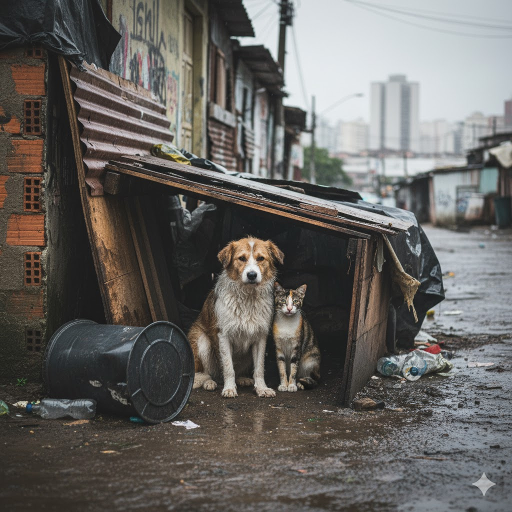
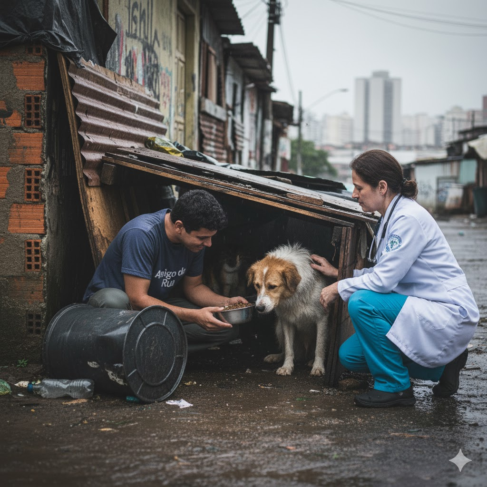

Quem Somos
A Amigos de Rua é uma ONG dedicada a resgatar, cuidar e promover a adoção de animais em situação de rua. Nosso objetivo é oferecer uma nova chance para aqueles que mais precisam.
Nossa Missão
Garantir bem-estar, amor e segurança para os animais abandonados, promovendo a conscientização e a adoção responsável.
Como Ajudar
Você pode contribuir de diversas formas: tornando-se voluntário, fazendo doações ou adotando um novo amigo.